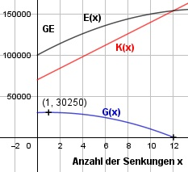

Aufgabe 88 Von einem Lebensmittel verkauft ein Händler monatlich 10 000 kg zu einem Preis von 10 €/kg. Bei einer Preissenkung von 0,25 €/kg kann er mit einer Verkaufssteigerung von 1 000 kg/Monat rechnen. Bei welchem Verkaufspreis erzielt er maximalen Gewinn, wenn er Selbstkosten von 7 €/kg hat? x = Anzahl der Preissenkungen E(x) = (10 000 + 1 000 * x) * (10 - 0,25 * x) E(x) = 100 000 - 2 500x + 10 000x - 250x2 E(x) = - 250x2 + 7 500x + 100 000 K(x) = 7 * (10 000 + 1 000 * x) K(x) = 70 000 + 7 000x G(x) = -250x2 + 7 500x + 100 000 - (70 000+7 000x) G(x) = - 250x2 + 500x + 30 000 G'(x) = - 500x + 500 G''(x) = - 500 < 0 -500x + 500 = 0 |+500x 500x = 500 |:500 x = 1 Preissenkungen G(1) = - 250 * 12 + 500 * 1 + 30 000 = 30 250 GE Hochpunkt (1|30 250) Nach 1 Preissenkung entsteht ein Gewinn von 30 250 GE. Preis nach 1 Preissenkung = 10 € - 1 * 0,25 € = 9,75 € Bei einem Stückpreis von 9,75 € entsteht maximaler Gewinn.
